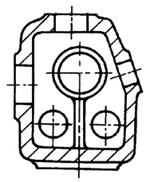
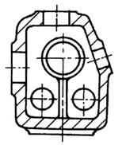

注 意 事 项
图 例
说 明
改 进 前
改 进 后
力求加工面布置在同一平面上

将1和2面布置在同一平面上，可以一次走刀加工，缩减加工时间，保证加工面的相对位置精度
尽可能避免倾斜的加工面

减少装夹和机床调整时间
尽可能避免大件的端面加工

当大件长度超过龙门刨加工宽度时，需落地镗或专用设备，而且装夹费时
注 意 事 项 |
图 例 |
说 明 |
|
改 进 前 |
改 进 后 |
||
力求加工面布置在同一平面上 |
|
将1和2面布置在同一平面上，可以一次走刀加工，缩减加工时间，保证加工面的相对位置精度 |
|
尽可能避免倾斜的加工面 |
 |
减少装夹和机床调整时间 |
|
尽可能避免大件的端面加工 |
|
当大件长度超过龙门刨加工宽度时，需落地镗或专用设备，而且装夹费时 |
|